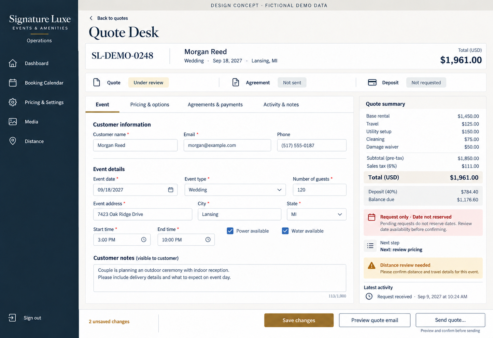
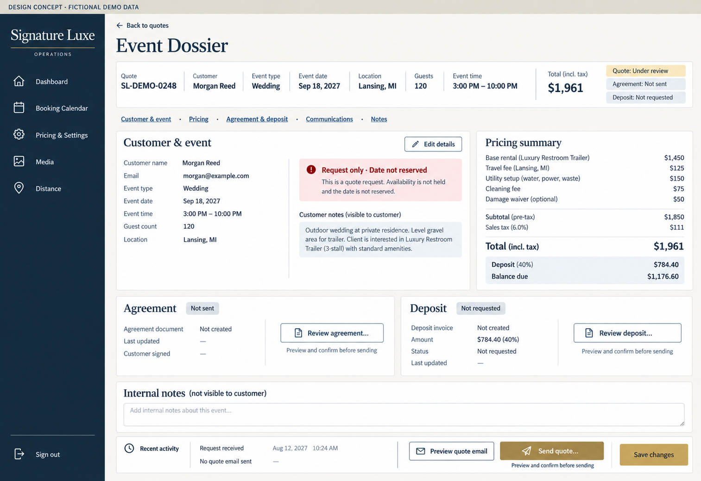
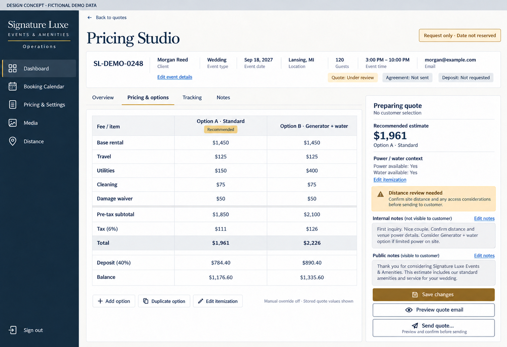

1. Quote Desk Recommended
Best for daily editing. Focused task tabs, a persistent financial summary, visible distance/date notices, and a clear Save / Preview / Send action shelf.
Open full-resolution mockup

2. Event Dossier
Best for reviewing the complete event. A single-page event file combines customer/event facts, itemized pricing, agreement/deposit tracking and internal notes, with section anchors instead of tabs.
Open full-resolution mockup

3. Pricing Studio
Best for preparing multiple quote options. An itemized comparison table dominates the workspace, with a preparation sidebar for totals, warnings, notes and customer communications.
Open full-resolution mockup
